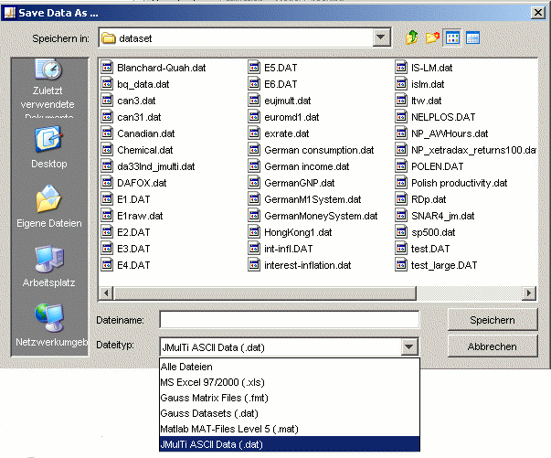

Exporting DatasetsGeneral RemarkData export can be used to interchange data between different programs. It is possible to export any series that appears in the time series list to a data file. To do this, one should select one or more series, click the RIGHT mouse button, and press SAVE DATA TO FILE. It is not only possible to save time series data, but also the state of the current analysis along with the data. This is handled by the project management. Not only time series, but any data that is stored internally by JMulTi can be exported to a file. See the symbol control section for more on this. Data FormatThe exported series are saved in the format that corresponds to the selected file filter. All supported data formats are listed there. See the import section for a description of them. If the default file filter is used, data is stored in the JMulTi DAT format.  |